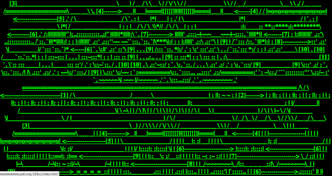
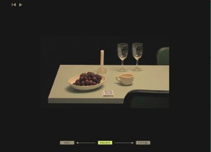

The idea and purpose behind my exhibition is I want to showcase examples and descriptions of net arts that have a sense of storytelling behind the art piece. There are many storytelling net arts out in the internet but I want to be able to showcase ones that are not only my favorite, but ones that showcase different time eras as all three net arts are varying in when they were made. I also want to showcase net arts that are more on the interactive side, as I feel like interactivity between the user and the art, forms a better connection especially for storytelling.
My Boyfriend Came Back from the War (1996) Olia Lialina

An interactive net art that depicts the story of a couple having relationship and connection problems after one of the partners returns from war. As the user clicks through the website, the story slowly unfolds between the couple.
My%Desktop (1994) JODI

A net art that tries to emphasize the complexity, UI, and interactivity of navigating a digital space, as well as cover the general asesthetics of computers of the time.
Barbara Bloom, Half Full — Half Empty (2008) Sara Tucker

A net art to showcase how perspective changes how we look at things even though they are all the same. Showcasing a difference in age/time, yet the video remains the same.